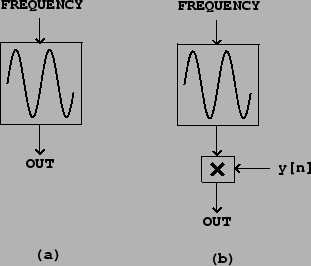
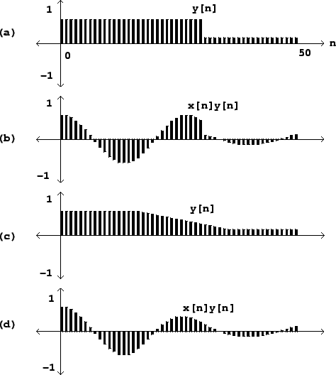

In most widely used audio synthesis and processing packages (Csound, Max/MSP,
and Pd, for instance), the audio operations are specified as
networks of
unit generators[Mat69] which pass audio signals among themselves. The user of
the software package specifies the network, sometimes called a
patch,
which essentially corresponds to the synthesis algorithm to be used, and then
worries about how to control the various unit generators in time. In this
section, we'll use abstract block diagrams to describe patches, but in the
``examples" section (Page  ), we'll choose a
specific implementation environment and show some of the software-dependent
details.
), we'll choose a
specific implementation environment and show some of the software-dependent
details.
To show how to produce a sinusoid with time-varying amplitude we'll need to introduce two unit generators. First we need a pure sinusoid which is made with an oscillator. Figure 1.5 (part a) shows a pictorial representation of a sinusoidal oscillator as an icon. The input is a frequency (in cycles per second), and the output is a sinusoid of peak amplitude one.
|  |
Figure 1.5 (part b) shows how to multiply the output of a sinusoidal
oscillator by an appropriate scale factor  to control its amplitude.
Since the oscillator's peak amplitude is 1, the peak amplitude of the product
is about
to control its amplitude.
Since the oscillator's peak amplitude is 1, the peak amplitude of the product
is about  , assuming
, assuming  changes slowly enough and doesn't become
negative in value.
changes slowly enough and doesn't become
negative in value.
|  |
Figure 1.6 shows how the sinusoid of Figure 1.1 is
affected by amplitude change by two different controlling signals  .
The controlling signal shown in part (a) has a discontinuity, and so
therefore does the resulting amplitude-controlled sinusoid shown in (b).
Parts (c) and (d) show a more gently-varying possibility for
.
The controlling signal shown in part (a) has a discontinuity, and so
therefore does the resulting amplitude-controlled sinusoid shown in (b).
Parts (c) and (d) show a more gently-varying possibility for  and the
result. Intuition suggests that the result shown in (b) won't sound like an
amplitude-varying sinusoid, but instead like a sinusoid interrupted by
an audible ``pop" after which it continues more quietly. In general, for
reasons that can't be explained in this chapter, amplitude control signals
and the
result. Intuition suggests that the result shown in (b) won't sound like an
amplitude-varying sinusoid, but instead like a sinusoid interrupted by
an audible ``pop" after which it continues more quietly. In general, for
reasons that can't be explained in this chapter, amplitude control signals
 which ramp smoothly from one value to another are less likely to give
rise to parasitic results (such as that ``pop") than are abruptly changing
ones.
which ramp smoothly from one value to another are less likely to give
rise to parasitic results (such as that ``pop") than are abruptly changing
ones.
For now we can state two general rules without justifying them. First, pure sinusoids are the signals most sensitive to the parasitic effects of quick amplitude change. So when you want to test an amplitude transition, if it works for sinusoids it will probably work for other signals as well. Second, depending on the signal whose amplitude you are changing, the amplitude control will need between 0 and 30 milliseconds of ``ramp" time--zero for the most forgiving signals (such as white noise), and 30 for the least (such as a sinusoid). All this also depends in a complicated way on listening levels and the acoustic context.
Suitable amplitude control functions  may be made using an
envelope generator.
Figure 1.7 shows a network in which an envelope generator is used to
control the amplitude of an oscillator. Envelope generators vary widely in
design, but we will focus on the simplest
kind, which generates line segments as shown in Figure 1.6 (part c).
If a
line segment is specified to ramp between two output values
may be made using an
envelope generator.
Figure 1.7 shows a network in which an envelope generator is used to
control the amplitude of an oscillator. Envelope generators vary widely in
design, but we will focus on the simplest
kind, which generates line segments as shown in Figure 1.6 (part c).
If a
line segment is specified to ramp between two output values  and
and  over
over
 samples starting at sample number
samples starting at sample number  , the output is:
, the output is:
In addition to changing amplitudes of sounds, amplitude control is often used, especially in real-time applications, simply to turn sounds on and off: to turn one off, ramp the amplitude smoothly to zero. Most software synthesis packages also provide ways to actually stop modules from computing samples at all, but here we'll use amplitude control instead.
The envelope generator dates from the analog era [Str95, p.64] [Cha80, p.90], as does the rest of Figure 1.7; oscillators with controllable frequency were called voltage-controlled oscillators or VCOs, and the multiplication step was done using a voltage-controlled amplifier or VCA [Str95, pp.34-35] [Cha80, pp.84-89]. Envelope generators are described in more detail in Section 4.1.